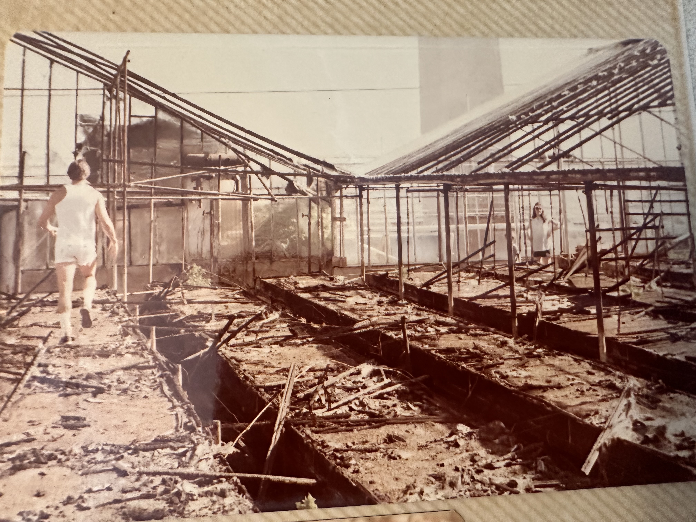

Denver Floral Industry History
Junglewood played a significant role in Denver's vibrant floral industry during the twentieth century. At the heart of this legacy were nine greenhouses where carnations were cultivated with care and precision. These growing spaces represented not just a business, but a way of life, connecting the family to the broader world of Denver's wholesale flower trade.
The work of maintaining and nurturing these greenhouses was meticulous. Disbudding—the painstaking removal of side buds to produce premium blooms—was a central task that required both skill and patience. The carnations grown at Junglewood supplied Denver Wholesale Flowers (DWF) and other outlets, contributing to the region's reputation as a center for quality floral production.
More detailed history about the greenhouses, the people who worked within them, the economics of the Denver floral industry, and Junglewood's role in this important agricultural tradition will be added as we continue to gather and preserve these stories.
If you have memories, photographs, or information about the Junglewood greenhouses and Denver's floral heritage, we would love to hear from you.
From the Greenhouses

Danny in the greenhouse

Danny among the carnations

Inside the Junglewood greenhouse
Red Rocks from the greenhouse